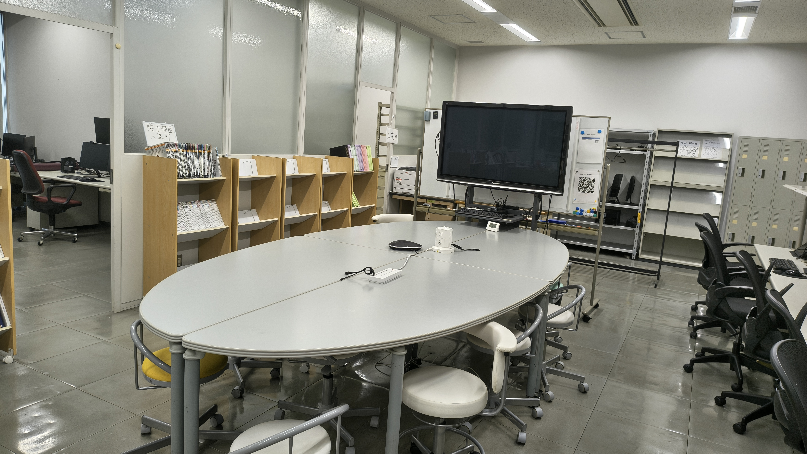

多胡研究室の概要

多胡研究室は、心身が健康的で充実した暮らしのためにをテーマに研究しています。
主に3つの研究をしています。
健康データを用いたデータマイニング、SNSにおける感情分析、個人主導で安全安心なデータ利活用
人間（社会）と技術の関わり方や影響を横断的に研究する領域が必要
キーワード:健康情報学、自然言語処理、ヘルスケア、機械学習、人工知能

多胡研究室は、心身が健康的で充実した暮らしのためにをテーマに研究しています。
主に3つの研究をしています。
健康データを用いたデータマイニング、SNSにおける感情分析、個人主導で安全安心なデータ利活用
人間（社会）と技術の関わり方や影響を横断的に研究する領域が必要
キーワード:健康情報学、自然言語処理、ヘルスケア、機械学習、人工知能
千葉工業大学 情報変革科学部 認知情報科学科 准教授
早稲田大学 人間総合研究センター 招聘研究員
千葉工業大学 情報科学部 情報ネットワーク学科 助教
早稲田大学 人間科学部 助手
早稲田大学 人間科学研究科 博士課程修了、博士（人間科学）
早稲田大学 人間科学研究科 修士課程早期修了、修士（人間科学）
早稲田大学 人間科学部 e-スクール 人間情報科学科 中退
群馬工業高等専門学校 事務
（株）NTTデータエンジニアリングシステムズ SE
早稲田大学 文学部 文学科 日本史コース、学士（文学）